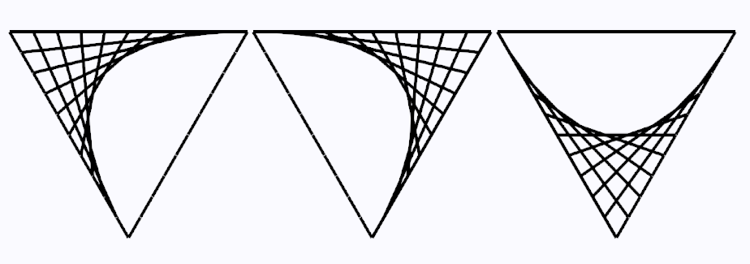

Press space to randomize the colors
This sketch implements Turtle graphics. You can read about how to implement turtles in p5 in my spirograph post. The whole hexagon is made from six equilateral triangles that look like this:
Let's start the turtle in the middle of the screen and make an equilateral triangle. We'll make it (move forward, turn right 120°) x 3.
Since we are going to be making 6 of these triangles all the same, let's save this code into a function called draw_triangle().
Let's see what happens when we call draw_triangle() twice in a row...
Nothing happened. That's because we have the turtle turn back towards the same direction it started in, and it draws the new triangle on top of the old triangle. So if we instead make the turtle turn right 60° before drawing the next triangle, we'll get this:
If we call draw_triangle() and turn right 60° six times, it will make a hexagon.
For the rest of this, I'm going to just focus on one triangle, since the hexagon is the same triangle drawn 6 times. To get the curved line effect, each side of the triangle is going to be split into n different segments. Let's take a look at it and see what I mean.
Here I've split each side into 10 equal lengths and labeled the sides A, B, and C. What we are going to do is draw a line from the point of the first split on side A, to the point of the first split on side B. We'll do the same for the point of the second split of side A to the point of the second split of side B, and do this for each split of the sides. We are also going to do this between sides B and C, and sides C and A. Like this...
So how do we go about doing this? First, we'll have to have a variable to store the number of splits we want in the triangle. This will make it easier if we want to increment or decrement the number of splits on the fly. We'll call this variable num_splits. And I'm going to store the side length of the triangle into a variable called length.
For each side of the triangle, we'll have the turtle move forward length / num_splits and save each (x,y) coordinate until it traverses the entire side length. Then we need the turtle to turn to the next side and do it agian. We'll push these points into a seperate stack for each side. Let's take a look at a code example here.
// initialize each stack as an empty array
var stack_A = [];
var stack_B = [];
var stack_C = [];
// side A
for(let i = 0; i < num_splits; i++) {
// move turtle
turtle.forward(length / num_splits);
// save turtle's coordinates to stack_A
stack_A.push(turtle.get_coordinates());
}
// turn turtle
turtle.right(120);
// side B
for(let i = 0; i < num_splits; i++) {
// move turtle
turtle.forward(length / num_splits);
// save turtle's coordinates to stack_B
stack_B.push(turtle.get_coordinates());
}
// turn turtle
turtle.right(120);
// side C
for(let i = 0; i < num_splits; i++) {
// move turtle
turtle.forward(length / num_splits);
// save turtle's coordinates to stack_C
stack_C.push(turtle.get_coordinates());
}
// turn turtle
turtle.right(120);
In this example, the code turtle.get_coordinates() returns a Point object that stores the current x and y value of the turtle. A simple Point class can be written like so:
class Point {
constructor(var x, var y) {
this.x = x;
this.y = y;
}
}
Now we have 3 stacks, stack_A, stack_B, stack_C, each with num_splits amount of Point objects. Let's see what happens if we draw a line from the first point in stack_A to the first point in stack_B.
var point_A = stack_A[0];
var point_B = stack_B[0];
line(point_A.x, point_A.y, point_B.x, point_B.y);
Great, it should work how we want. Since there are num_splits amount of points, we can make a for loop that iterates num_splits amount of times and draws a line between each point.
for(let i = 0; i < num_splits; i++) {
// get each point from the stacks
var point_A = stack_A[i];
var point_B = stack_B[i];
var point_C = stack_C[i];
// draw a line between each point
line(point_A.x, point_A.y, point_B.x, point_B.y);
line(point_B.x, point_B.y, point_C.x, point_C.y);
line(point_C.x, point_C.y, point_A.x, point_A.y);
}
And that should give us the cool little triangle we are after.
Now if we go ahead and draw this 6 times like we did before..
That's about it! Now it's time for you to play around with colors and splits and have fun with it.